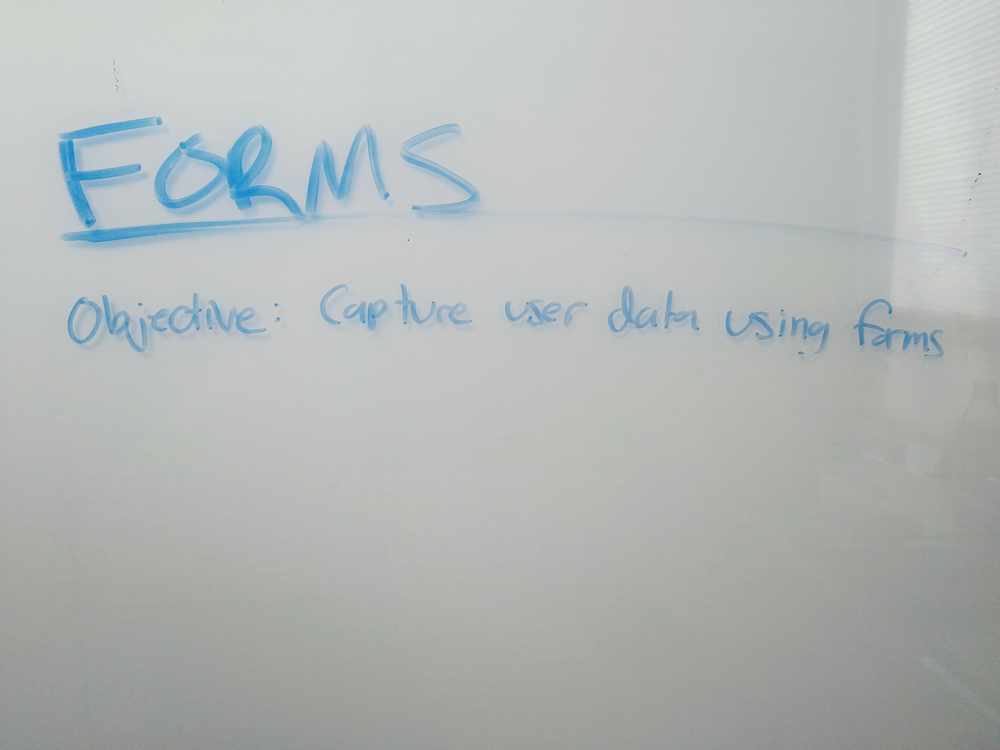
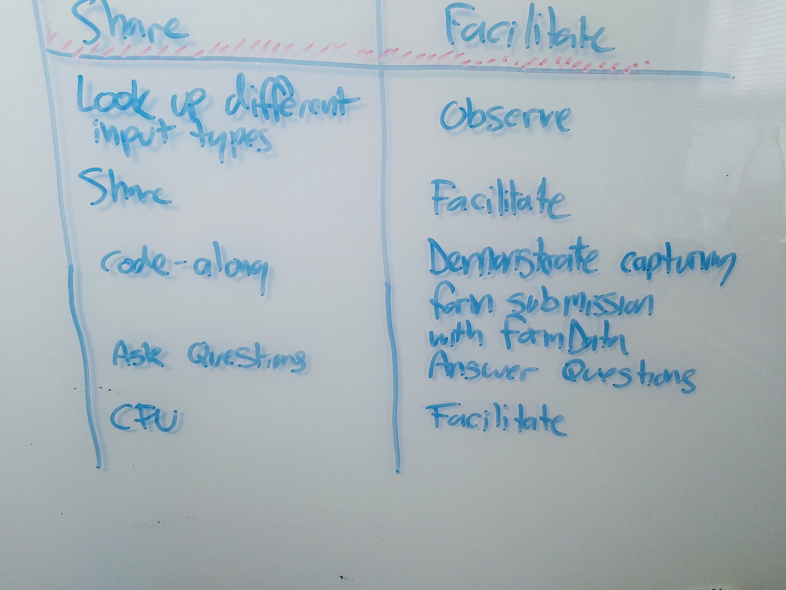
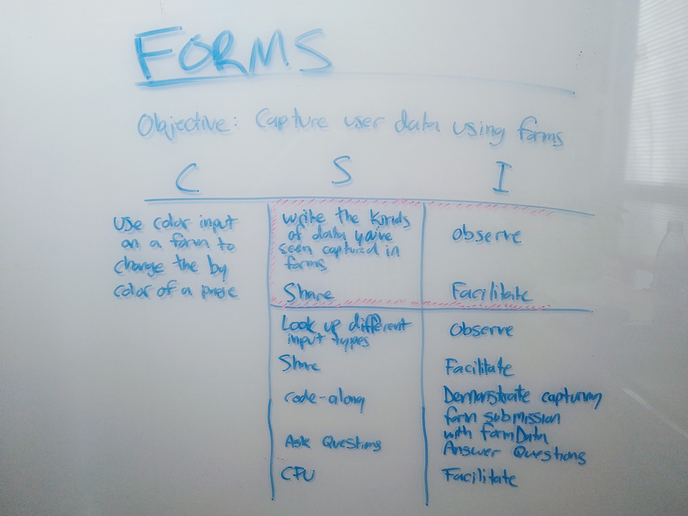

Lesson Planning
As an educator, one of the things I create is lesson plans. I devised a process for writing lesson plans called CSI Planning which is adapted from Doug Lemov's Double Plan. These are the 5 steps in CSI Planning:
-
The first step of CSI planning is declaring a 4M learning objective. This is the goal that all of the other activities in the lesson support.
 -
Next, identify a brief assessment that will give you data on which students have met the objective, which students need more assistance, and what specific issues people are having. This is a check for understanding, and makes up the "C" in CSI planning.
-
Now that you've clarified what you want to teach and how you'll measure success, come up with a hook. This is a brief but engaging way to start the lesson. It can be a thought-provoking question, a hands-on activity, or a demonstration. The important things are that it primes the students for the rest of the lesson and requires thinking from every student.
-
Next, decide which activities you will do to get students ready to pass your check for understanding. Each step should describe what the student ("S") is doing and what the instructor ("I") is doing during that step. These need to be done in concert, but prioritize student activity. If you notice that you're doing too much "teacher talks / students listen", reimagine the step as something more active for the students.
 -
Last, look at the entire lesson as a unit. Are the students active enough? Are the activities sufficient to prepare for the check for understanding? Are any activities unnecessary? Do the steps flow well? Is the hook engaging enough? What other activities will you want to have ready to remediate with if it turns out students don't understand?

Once the plan is complete, keep it somewhere easy for you to see during the lesson. Don't be afraid to deviate from the plan as new opportunities and challenges present themselves, but also take time after the lesson to revise your plan based on what you learned so you can use it next time.